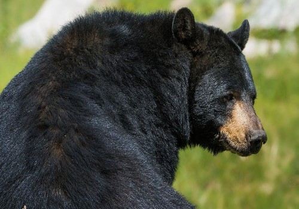
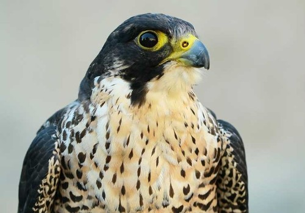
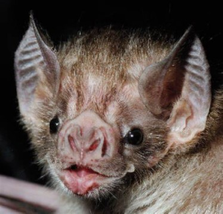

FUNDACIÓN DEL ESTADO
Monterrey fundada hace 424 años por un grupo de exploradores y colonizadores estas tierras Fueron habistadas por una expedición en los años de 1572 y 1573 que buscaba posibles rutas entre Tampico y Mazapil para el transporte de plata años más tarde en 1596 se dio la fundación definitiva a cargo de Don Diego de Montemayor Quién le puso el nombre de ciudad Metropolitana de Nuestra Señora de Monterrey en honor al virrey de Nueva España También conocido como Conde de Monterrey Galicia Don Gaspar de Zúñiga y Acevedo una de las costumbres y tradiciones de Monterrey más significativas es la feria de villaseca Qué se celebra Durante los meses de julio y agosto se celebra con desfiles de carros cabalgatas peleas de gallo y carreras de caballo también se suele coronará una reina de la feria se suele celebrar también la feria de machacado ,feria de agrícola comercial y Ganadera la celebración de la Virgen de Guadalupe ,la fiesta de San Antonio de abad, la feria de la Candelaria entre otras. Aunque oficialmente la historia reconoce a Diego de Montemayor como el fundador de la ciudad, en 1596, quien legalmente contaba con los permisos para fundar el Nuevo Reino de León y ciudades era Luis Carvajal y de la Cueva, quien en 1582 fundó la Villa de San Luis, hoy Monterrey.
ANIMALES ENDEMICOS
OSO NEGRO
HALCON
.jpg)
TEJON SOLITARIO
.jpg)
TLACUACHE
MURCIELAGO
.jpg)
CACOMIXTLE